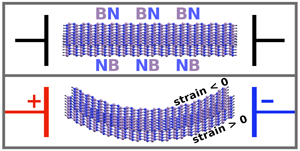

The symmetry properties of atomically thin boron nitride (BN) monolayers endow them with piezoelectric properties, whereas the bulk parent crystal of stacked BN layers is not piezoelectric. This suggests potential for unusual electromechanical properties in the few layer regime.
Obtaining monolayers or bilayers (consisting of two stacked monolayers) from a bulk BN crystal is routinely done using techniques very similar to those used for graphene. While BN bilayers are not atomically thin in the strict sense, the antiparallel stacking of the two constituent monolayers gives rise to some very interesting electromechanical physics that are unique to the bilayer case. The bilayer is a cantilever-type heterostructure where one layer’s piezoelectric strain response will be opposite from that of the other. This hints at the possibility of electrically controlling or sensing the curvature of a membrane that is only 0.3 nm thick!

The naturally occurring antiparallel stacking of piezoelectric 2D crystals enables isolation of bilayers where the constituent monolayers respond oppositely to the same applied electric field. This structure can be exploited to amplify in-plane piezoelectric displacements by factors ~ 103-104.
Detailed analysis of elasticity and the interlayer interaction using classical energy models and density functional theory in tandem reveals that such a bilayer of BN amplifies piezoelectric displacements by a factor on the order of 103-104. Radii of curvature on the order of 10 microns, for example, can thus be dynamically controlled using readily achievable electric fields of magnitude 25 V per micron.
This property of BN bilayers is also unique in that the forces and displacements it produces are reversible by changing the sign of the electric field, because the effect scales linearly with the electric field E. That is in stark contrast to many of the present NEMS actuators that rely on electrostriction-type E2-scaling interactions, which make the applicable forces purely attractive. Conversely, the same bilayer can also be used in a sensing context, where a mechanically imposed curvature leads to a measurable voltage.
After extending our bilayer model to the more general case of N layers (where N is some small number), we also discover that this electromechanical coupling exists only in the 2-layer case. This makes BN bilayers a textbook example of the dramatic size-dependence of physical properties at the nanoscale.
Tutorial:
Emergent Electromechanical Properties of Nanoscale Materials, Evan Reed, Computational Chemistry and Materials Science program (Lawrence Livermore National Laboratory).
Publication:
Duerloo, K.-A. N., Reed, E. J., Flexural Electromechanical Coupling: a Nanoscale Emergent Property of Boron Nitride Bilayers. Nano Letters, 13, 1681-1686, doi:10.1021/nl4001635 (2013).